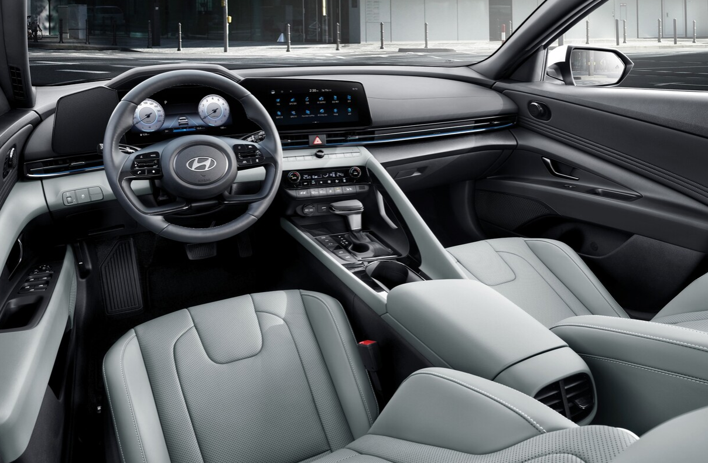

핵심 요약
✔ 아반떼 장기렌트 가격은 트림보다 계약기간·주행거리·초기 납입 조건에 따라 크게 달라짐
✔ 사회초년생은 월 렌트료 외 주유비·주차비·면책금까지 포함한 총예산을 계산해야 함
✔ 선수금과 보증금은 월 비용이 낮아 보여도 반환 여부가 다르므로 반드시 구분
✔ 36개월·48개월·60개월 중 생활 변화 가능성을 고려해 계약기간 선택
✔ 최소 3곳 이상의 동일 조건 견적을 받아 총납부액과 만기 인수비용을 비교
✔ 아반떼 장기렌트 가격은 트림보다 계약기간·주행거리·초기 납입 조건에 따라 크게 달라짐
✔ 사회초년생은 월 렌트료 외 주유비·주차비·면책금까지 포함한 총예산을 계산해야 함
✔ 선수금과 보증금은 월 비용이 낮아 보여도 반환 여부가 다르므로 반드시 구분
✔ 36개월·48개월·60개월 중 생활 변화 가능성을 고려해 계약기간 선택
✔ 최소 3곳 이상의 동일 조건 견적을 받아 총납부액과 만기 인수비용을 비교
사회초년생 첫차로 아반떼가 자주 비교되는 이유
아반떼는 준중형 세단 가운데 차량 가격과 실내 공간, 연료비, 주차 편의성의 균형이 비교적 좋은 차종으로 평가됩니다. 첫 직장을 다니기 시작해 출퇴근 차량이 필요하지만 중형차나 SUV의 월 부담이 걱정되는 사회초년생에게는 현실적인 비교 대상이 될 수 있습니다.
현대자동차 공식 가격 페이지 기준 아반떼 가솔린은 스마트·모던·인스퍼레이션·N Line 등 여러 트림으로 구성되어 있으며, 차량 기본가격은 선택 트림과 옵션에 따라 달라집니다. 다만 장기렌트에서는 차량 판매가격을 그대로 나누어 월 렌트료를 계산하는 것이 아닙니다. 렌터카사의 할인율, 잔존가치, 계약기간, 연간 주행거리, 보증금·선수금, 보험 연령과 정비 포함 여부가 함께 반영됩니다.
따라서 “아반떼 장기렌트는 월 얼마”라는 한 가지 숫자만 보고 결정하기보다 본인의 조건으로 동일하게 견적을 받아 비교해야 합니다. 특히 사회초년생은 첫 차에 대한 기대감 때문에 상위 트림과 여러 옵션을 추가하기 쉬운데, 옵션이 늘어날수록 월 렌트료와 만기 인수비용도 함께 높아질 수 있다는 점을 고려해야 합니다.
현대자동차 공식 가격 페이지 기준 아반떼 가솔린은 스마트·모던·인스퍼레이션·N Line 등 여러 트림으로 구성되어 있으며, 차량 기본가격은 선택 트림과 옵션에 따라 달라집니다. 다만 장기렌트에서는 차량 판매가격을 그대로 나누어 월 렌트료를 계산하는 것이 아닙니다. 렌터카사의 할인율, 잔존가치, 계약기간, 연간 주행거리, 보증금·선수금, 보험 연령과 정비 포함 여부가 함께 반영됩니다.
따라서 “아반떼 장기렌트는 월 얼마”라는 한 가지 숫자만 보고 결정하기보다 본인의 조건으로 동일하게 견적을 받아 비교해야 합니다. 특히 사회초년생은 첫 차에 대한 기대감 때문에 상위 트림과 여러 옵션을 추가하기 쉬운데, 옵션이 늘어날수록 월 렌트료와 만기 인수비용도 함께 높아질 수 있다는 점을 고려해야 합니다.
아반떼 장기렌트 가격을 결정하는 핵심 조건
아반떼의 월 렌트료는 차량 트림보다도 계약 설정 방식에 따라 체감 차이가 크게 나타날 수 있습니다. 같은 아반떼 모던 트림이라도 36개월과 60개월, 연간 1만km와 3만km, 무보증과 보증금 조건의 월 비용은 서로 다릅니다. 광고에 표시된 최저 월 렌트료는 특정 선수금이나 제한된 주행거리, 장기 계약을 전제로 할 수 있으므로 세부 조건을 확인해야 합니다.
| 비교 항목 | 월 렌트료에 미치는 영향 | 확인할 내용 |
|---|---|---|
| 차량 트림·옵션 | 차량가가 높을수록 월 비용과 인수금이 상승할 수 있음 | 실제로 필요한 안전·편의 옵션인지 확인 |
| 계약기간 | 기간이 길면 월 비용이 낮아질 수 있으나 장기간 유지 부담 증가 | 36·48·60개월 총납부액 비교 |
| 연간 주행거리 | 허용 거리가 길수록 월 비용이 높아질 수 있음 | 출퇴근 거리와 주말 운행량 계산 |
| 보증금·선수금 | 초기 납입액이 있으면 월 비용이 낮아 보일 수 있음 | 만기 반환 여부와 총비용 비교 |
| 정비 서비스 | 정비 포함 범위가 넓으면 월 비용이 상승할 수 있음 | 엔진오일·타이어·소모품 포함 여부 |
| 보험 조건 | 운전자 연령과 범위에 따라 조건이 달라질 수 있음 | 면책금, 대물 한도, 운전자 범위 확인 |
장기렌트 월 비용은 렌터카사와 심사 조건, 프로모션 시점에 따라 달라지므로 특정 금액을 고정된 시세로 받아들이지 않는 것이 좋습니다.
스마트·모던·인스퍼레이션 중 어떤 트림이 적당할까?
사회초년생이 첫 차로 아반떼를 이용한다면 가장 높은 트림이 반드시 최선은 아닙니다. 출퇴근과 일상 주행이 중심이라면 기본 안전 사양과 필요한 편의 기능이 갖춰진 트림을 먼저 비교하고, 부족한 옵션만 선택하는 방식이 월 부담을 줄이는 데 유리할 수 있습니다.
스마트 트림은 초기 차량가를 낮추는 데 유리하지만 원하는 편의 기능이 빠져 있을 수 있습니다. 모던 트림은 기본 사양과 편의성의 균형을 원하는 이용자가 자주 비교하는 구간입니다. 인스퍼레이션은 다양한 안전·편의 사양이 포함되지만 월 렌트료와 만기 인수가격이 높아질 가능성이 있습니다. N Line은 디자인과 주행 감성을 중시하는 이용자에게 매력적일 수 있으나 첫 차 예산을 보수적으로 잡는 경우에는 총비용을 더욱 꼼꼼히 확인해야 합니다.
트림을 정할 때는 외관보다 매일 사용하는 기능을 기준으로 판단하는 것이 좋습니다. 스마트 크루즈 컨트롤, 주차 보조, 열선·통풍 시트, 내비게이션처럼 출퇴근과 장거리 운전에 직접 영향을 주는 기능은 활용도가 높을 수 있지만, 거의 사용하지 않는 선택 사양까지 추가하면 계약기간 전체의 부담만 커질 수 있습니다.
스마트 트림은 초기 차량가를 낮추는 데 유리하지만 원하는 편의 기능이 빠져 있을 수 있습니다. 모던 트림은 기본 사양과 편의성의 균형을 원하는 이용자가 자주 비교하는 구간입니다. 인스퍼레이션은 다양한 안전·편의 사양이 포함되지만 월 렌트료와 만기 인수가격이 높아질 가능성이 있습니다. N Line은 디자인과 주행 감성을 중시하는 이용자에게 매력적일 수 있으나 첫 차 예산을 보수적으로 잡는 경우에는 총비용을 더욱 꼼꼼히 확인해야 합니다.
트림을 정할 때는 외관보다 매일 사용하는 기능을 기준으로 판단하는 것이 좋습니다. 스마트 크루즈 컨트롤, 주차 보조, 열선·통풍 시트, 내비게이션처럼 출퇴근과 장거리 운전에 직접 영향을 주는 기능은 활용도가 높을 수 있지만, 거의 사용하지 않는 선택 사양까지 추가하면 계약기간 전체의 부담만 커질 수 있습니다.

아반떼 장기렌트와 중고차 구매 비교
사회초년생은 장기렌트뿐 아니라 중고 아반떼 구매도 함께 고민하는 경우가 많습니다. 중고차는 차량을 본인 명의로 소유할 수 있고 대출을 모두 상환하면 월 납입 부담이 사라진다는 장점이 있습니다. 반면 취득 비용과 보험료, 자동차세, 정비비를 직접 관리해야 하며 차량 상태에 따라 예상하지 못한 수리비가 발생할 수 있습니다.
장기렌트는 보험과 자동차 관련 세금이 월 렌트료에 포함되는 상품이 많아 매월 비용 관리가 단순합니다. 사고가 발생해도 개인 보험 경력의 할증 부담과는 구조가 다르며, 정비 포함 상품을 선택하면 차량 관리 부담도 줄일 수 있습니다. 다만 계약 중 차량을 자유롭게 판매할 수 없고 중도해지 시 위약금이 발생하며, 번호판과 만기 반납 조건을 고려해야 합니다.
장기렌트는 보험과 자동차 관련 세금이 월 렌트료에 포함되는 상품이 많아 매월 비용 관리가 단순합니다. 사고가 발생해도 개인 보험 경력의 할증 부담과는 구조가 다르며, 정비 포함 상품을 선택하면 차량 관리 부담도 줄일 수 있습니다. 다만 계약 중 차량을 자유롭게 판매할 수 없고 중도해지 시 위약금이 발생하며, 번호판과 만기 반납 조건을 고려해야 합니다.
| 항목 | 아반떼 장기렌트 | 중고 아반떼 구매 |
|---|---|---|
| 초기 비용 | 무보증 조건이면 낮출 수 있으나 심사에 따라 달라짐 | 선수금·취득비용·보험료 필요 가능 |
| 보험·세금 | 월 렌트료에 포함되는 구조가 일반적 | 본인이 별도로 가입·납부 |
| 차량 관리 | 정비 포함 상품 선택 가능 | 소모품과 수리를 직접 관리 |
| 중도 처분 | 해지 또는 승계 조건 확인 필요 | 직접 판매 가능 |
| 만기 | 반납·인수·재렌트 중 계약 조건에 따라 선택 | 본인 소유 유지 |
보증금과 선수금, 무보증 조건의 차이
아반떼 장기렌트 견적을 비교할 때 월 렌트료를 낮추기 위해 초기 납입금을 넣는 경우가 있습니다. 이때 보증금과 선수금을 같은 개념으로 생각하면 안 됩니다. 보증금은 계약 종료 후 차량 반납과 정산이 끝나면 반환되는 구조가 일반적이지만, 선수금은 월 렌트료 일부를 미리 납부하는 방식이어서 만기에 반환되지 않습니다.
선수금이 많이 들어간 견적은 월 렌트료가 매우 저렴해 보일 수 있습니다. 그러나 초기 납입액과 계약기간 동안 낸 월 렌트료를 합산하면 무보증 조건보다 총비용 차이가 크지 않거나 오히려 불리할 수 있습니다. 광고 금액만 비교하지 말고 초기 납입금, 월 렌트료, 만기 인수금, 부가 비용을 모두 합산해야 합니다.
사회초년생은 비상자금이 충분하지 않은 상태에서 큰 보증금이나 선수금을 넣기보다, 계약기간 동안 안정적으로 감당할 수 있는 월 예산과 현금 보유액을 함께 고려하는 것이 좋습니다. 무보증 계약 역시 누구에게나 보장되는 것은 아니며 소득, 재직, 신용 상태와 차량 가격에 따라 보증금 또는 보증보험이 요구될 수 있습니다.
선수금이 많이 들어간 견적은 월 렌트료가 매우 저렴해 보일 수 있습니다. 그러나 초기 납입액과 계약기간 동안 낸 월 렌트료를 합산하면 무보증 조건보다 총비용 차이가 크지 않거나 오히려 불리할 수 있습니다. 광고 금액만 비교하지 말고 초기 납입금, 월 렌트료, 만기 인수금, 부가 비용을 모두 합산해야 합니다.
사회초년생은 비상자금이 충분하지 않은 상태에서 큰 보증금이나 선수금을 넣기보다, 계약기간 동안 안정적으로 감당할 수 있는 월 예산과 현금 보유액을 함께 고려하는 것이 좋습니다. 무보증 계약 역시 누구에게나 보장되는 것은 아니며 소득, 재직, 신용 상태와 차량 가격에 따라 보증금 또는 보증보험이 요구될 수 있습니다.
계약기간은 36개월·48개월·60개월 중 무엇이 좋을까?
36개월 계약은 상대적으로 차량 교체 시점이 빠르고 직장이나 거주지 변화에 대응하기 쉽지만 월 렌트료가 높게 산정될 수 있습니다. 48개월은 월 부담과 이용기간 사이에서 균형을 찾는 이용자가 자주 비교하는 조건입니다. 60개월은 월 렌트료가 낮아질 가능성이 있으나 향후 결혼, 이직, 해외 체류, 출퇴근 환경 변화가 생겨도 장기간 계약을 유지해야 합니다.
첫 직장에 입사한 지 얼마 되지 않았거나 향후 생활 변화 가능성이 높다면 월 렌트료 몇 만원을 낮추기 위해 무조건 60개월을 선택하는 것은 신중해야 합니다. 중도해지 위약금은 남은 계약기간과 차량 가치에 따라 부담이 커질 수 있기 때문입니다.
견적을 받을 때는 36·48·60개월을 각각 요청하고 월 렌트료뿐 아니라 총납부액을 비교해야 합니다. 차량을 만기에 인수할 계획이라면 계약기간별 인수금액까지 함께 확인해야 실제로 어느 조건이 유리한지 판단할 수 있습니다.
첫 직장에 입사한 지 얼마 되지 않았거나 향후 생활 변화 가능성이 높다면 월 렌트료 몇 만원을 낮추기 위해 무조건 60개월을 선택하는 것은 신중해야 합니다. 중도해지 위약금은 남은 계약기간과 차량 가치에 따라 부담이 커질 수 있기 때문입니다.
견적을 받을 때는 36·48·60개월을 각각 요청하고 월 렌트료뿐 아니라 총납부액을 비교해야 합니다. 차량을 만기에 인수할 계획이라면 계약기간별 인수금액까지 함께 확인해야 실제로 어느 조건이 유리한지 판단할 수 있습니다.
연간 주행거리와 초과 주행료 계산
장기렌트 계약에는 보통 연간 허용 주행거리가 설정됩니다. 사회초년생 출퇴근 차량이라면 집과 직장의 왕복 거리, 월 근무일수, 주말 이동과 명절·여행 주행을 합산해 예상 거리를 계산해야 합니다. 왕복 40km를 월 22일 운행하면 출퇴근만으로도 연간 주행거리가 상당히 늘어날 수 있습니다.
주행거리를 지나치게 낮게 설정하면 월 렌트료는 줄어들 수 있지만 만기 반납 시 초과 주행료가 발생할 수 있습니다. 반대로 실제보다 지나치게 높은 조건을 선택하면 사용하지 않는 거리만큼 월 비용을 더 부담할 수 있습니다. 향후 영업직 전환이나 장거리 통근 가능성이 있다면 여유 있는 조건과 계약 중 주행거리 변경 가능 여부도 확인하는 것이 좋습니다.
주행거리를 지나치게 낮게 설정하면 월 렌트료는 줄어들 수 있지만 만기 반납 시 초과 주행료가 발생할 수 있습니다. 반대로 실제보다 지나치게 높은 조건을 선택하면 사용하지 않는 거리만큼 월 비용을 더 부담할 수 있습니다. 향후 영업직 전환이나 장거리 통근 가능성이 있다면 여유 있는 조건과 계약 중 주행거리 변경 가능 여부도 확인하는 것이 좋습니다.
사고·보험·면책금에서 확인할 부분
장기렌트는 렌터카사 명의의 보험이 적용되는 구조가 일반적이지만 모든 사고 비용이 자동으로 면제되는 것은 아닙니다. 사고가 발생하면 계약서에 정한 차량 손해 면책금이 부과될 수 있으며, 휴차료나 견인비, 타이어 손상처럼 보장 범위 밖의 비용이 생길 가능성도 있습니다.
운전자 연령 제한과 등록 가능한 운전자 범위도 확인해야 합니다. 본인 외 가족이나 배우자가 운전할 가능성이 있다면 추가 운전자 등록 조건을 살펴보고, 만 21세·26세 이상 등 상품별 연령 기준을 확인해야 합니다. 사회초년생은 보험 경력이 짧아 직접 차량을 구매했을 때 보험료가 높을 수 있으므로 장기렌트의 보험 포함 구조가 장점이 될 수 있지만, 사고 면책금과 보상 한도를 함께 비교해야 정확한 판단이 가능합니다.
운전자 연령 제한과 등록 가능한 운전자 범위도 확인해야 합니다. 본인 외 가족이나 배우자가 운전할 가능성이 있다면 추가 운전자 등록 조건을 살펴보고, 만 21세·26세 이상 등 상품별 연령 기준을 확인해야 합니다. 사회초년생은 보험 경력이 짧아 직접 차량을 구매했을 때 보험료가 높을 수 있으므로 장기렌트의 보험 포함 구조가 장점이 될 수 있지만, 사고 면책금과 보상 한도를 함께 비교해야 정확한 판단이 가능합니다.
만기 반납과 인수 중 어떤 선택이 유리할까?
아반떼를 계약기간 동안 이용한 뒤에는 상품 조건에 따라 반납하거나 인수할 수 있습니다. 반납할 계획이라면 외관 손상, 휠·타이어 상태, 실내 오염, 사고 수리와 원상복구 기준을 계약 전에 확인해야 합니다. 일상적인 사용 흔적과 비용 청구 대상 손상의 기준은 렌터카사마다 다를 수 있습니다.
인수를 고려한다면 월 렌트료만 볼 것이 아니라 만기 인수가격과 취득 관련 비용을 합산해야 합니다. 계약기간 동안 납부한 총액과 만기 인수비용을 더한 뒤 신차 구매 또는 할부와 비교해야 합니다. 차량을 오래 보유할 생각이 명확하다면 인수 조건이 합리적인 상품인지 확인하고, 3~5년 뒤 다른 차량으로 교체할 가능성이 크다면 반납형 조건이 더 단순할 수 있습니다.
인수를 고려한다면 월 렌트료만 볼 것이 아니라 만기 인수가격과 취득 관련 비용을 합산해야 합니다. 계약기간 동안 납부한 총액과 만기 인수비용을 더한 뒤 신차 구매 또는 할부와 비교해야 합니다. 차량을 오래 보유할 생각이 명확하다면 인수 조건이 합리적인 상품인지 확인하고, 3~5년 뒤 다른 차량으로 교체할 가능성이 크다면 반납형 조건이 더 단순할 수 있습니다.
아반떼 장기렌트를 저렴하게 비교하는 방법
첫째, 모든 업체에 동일한 조건을 전달해야 합니다. 차량 트림, 옵션, 계약기간, 연간 주행거리, 초기 비용, 정비 포함 여부가 다르면 월 렌트료를 직접 비교할 수 없습니다.
둘째, 즉시출고 차량과 재고 차량의 프로모션을 확인합니다. 색상과 옵션을 일부 조정할 수 있다면 렌터카사가 확보한 차량에서 할인 조건이 나올 수 있습니다. 다만 저렴하다는 이유만으로 필요하지 않은 트림이나 장기 계약을 선택해서는 안 됩니다.
셋째, 월 렌트료가 아니라 총납부액을 계산합니다. 초기 선수금, 매월 납부액, 만기 인수금, 탁송료와 부대비용까지 합산해야 합니다. 넷째, 최소 3개 업체의 견적을 비교하고 계약서에 적힌 면책금, 중도해지, 승계, 반납 기준을 확인해야 합니다.
마지막으로 당장 출고가 급하지 않다면 월별 프로모션과 차량 재고를 비교할 시간을 확보하는 것이 좋습니다. 다만 미래 할인은 확정할 수 없으므로 현재 조건에서 감당 가능한 예산을 먼저 정하고 그 범위 안에서 선택해야 합니다.
둘째, 즉시출고 차량과 재고 차량의 프로모션을 확인합니다. 색상과 옵션을 일부 조정할 수 있다면 렌터카사가 확보한 차량에서 할인 조건이 나올 수 있습니다. 다만 저렴하다는 이유만으로 필요하지 않은 트림이나 장기 계약을 선택해서는 안 됩니다.
셋째, 월 렌트료가 아니라 총납부액을 계산합니다. 초기 선수금, 매월 납부액, 만기 인수금, 탁송료와 부대비용까지 합산해야 합니다. 넷째, 최소 3개 업체의 견적을 비교하고 계약서에 적힌 면책금, 중도해지, 승계, 반납 기준을 확인해야 합니다.
마지막으로 당장 출고가 급하지 않다면 월별 프로모션과 차량 재고를 비교할 시간을 확보하는 것이 좋습니다. 다만 미래 할인은 확정할 수 없으므로 현재 조건에서 감당 가능한 예산을 먼저 정하고 그 범위 안에서 선택해야 합니다.
계약 전 최종 체크리스트
✔ 아반떼 트림과 꼭 필요한 옵션만 선택했는지
✔ 초기 납입금이 보증금인지 선수금인지
✔ 월 렌트료와 초기 비용을 합친 총납부액
✔ 36·48·60개월별 월 비용과 총비용
✔ 실제 출퇴근 거리를 반영한 연간 주행거리
✔ 초과 주행료와 계약 중 거리 변경 가능 여부
✔ 운전자 연령·범위와 사고 면책금
✔ 정비 서비스와 타이어·소모품 포함 범위
✔ 중도해지 위약금과 계약 승계 조건
✔ 만기 반납 손상 기준과 인수가격
✔ 초기 납입금이 보증금인지 선수금인지
✔ 월 렌트료와 초기 비용을 합친 총납부액
✔ 36·48·60개월별 월 비용과 총비용
✔ 실제 출퇴근 거리를 반영한 연간 주행거리
✔ 초과 주행료와 계약 중 거리 변경 가능 여부
✔ 운전자 연령·범위와 사고 면책금
✔ 정비 서비스와 타이어·소모품 포함 범위
✔ 중도해지 위약금과 계약 승계 조건
✔ 만기 반납 손상 기준과 인수가격
자주 묻는 질문 (FAQ)
Q. 아반떼 장기렌트 월 렌트료는 얼마인가요?A. 트림, 옵션, 계약기간, 연간 주행거리, 보증금·선수금, 보험과 정비 조건에 따라 달라집니다. 광고 최저가보다 동일 조건으로 받은 실제 견적의 총납부액을 비교해야 합니다.
Q. 사회초년생도 무보증으로 계약할 수 있나요?
A. 가능할 수 있지만 소득, 재직기간, 신용 상태와 차량 가격에 따라 보증금이나 보증보험이 요구될 수 있습니다. 무보증 여부보다 계약기간 전체의 총비용을 확인하는 것이 중요합니다.
Q. 아반떼 스마트와 모던 중 어떤 트림이 좋나요?
A. 예산을 최소화하려면 스마트를 먼저 비교할 수 있고, 자주 사용하는 편의 사양을 원한다면 모던 이상을 검토할 수 있습니다. 옵션별 월 비용 차이를 확인한 뒤 실제 활용도를 기준으로 선택하는 것이 좋습니다.
Q. 36개월과 48개월 중 어느 계약이 유리한가요?
A. 36개월은 차량 교체가 빠른 대신 월 렌트료가 높을 수 있고, 48개월은 월 비용이 낮아질 수 있지만 계약 유지기간이 길어집니다. 생활 변화 가능성과 총납부액을 함께 비교해야 합니다.
Q. 장기렌트 이용 중 사고가 나면 보험료가 오르나요?
A. 개인 명의 자동차보험과는 다른 구조로 운영되지만 사고 시 계약서에 정한 면책금과 보장 제외 비용이 발생할 수 있습니다. 사고 처리 조건과 면책금 수준을 계약 전에 확인해야 합니다.
Q. 계약 종료 후 아반떼를 인수할 수 있나요?
A. 인수형 또는 선택형 상품이라면 가능합니다. 만기 인수가격과 취득 관련 비용, 계약기간 총납부액을 합산해 구매 방식과 비교하는 것이 좋습니다.
차량 트림과 기본가격 정보는 현대자동차 공식 아반떼 가격 페이지를 참고했으며, 실제 판매가격과 장기렌트 조건은 계약 시점과 업체별 정책에 따라 달라질 수 있습니다.